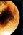

| Mercurio | |
 | Venus | |
 | La Tierra | |
|  | Marte | |
 | Jupiter | |
 | Saturno | |
 | Urano | |
 | Neptuno | |
 | Plutón | |
| Deja tu opinión | ||
PLUTON: EL DESCONOCIDO
Plutón, el más pequeño y exterior de los planetas del sistema solar, fue descubierto por el astrónomo estadounidense Clyde Tombaugh en el año 1930.
El descubrimiento del noveno planeta, esperado desde largo tiempo atrás, fue en realidad una sorpresa para los astrónomos, que habían previsto un objeto más grande, de órbita más "regular". Los valores del semieje mayor (39.44 UA) y de la excentricidad orbital (0.25) determinan que en las proximidades del perihelio, es decir, en la región de la órbita donde el planeta se aproxima más al Sol, Plutón se sitúe por dentro de la órbita de Neptuno.
Plutón es un planeta anómalo también por otros motivos. Por ejemplo, en el año 1978 se descubrió que a su alrededor gira un satélite, bautizado más tarde con el nombre de Caronte, de dimensiones considerables: cerca de la mitad de las de su planeta. En realidad, se podría hablar de Plutón como de !un planeta doble¡. Es posible que Caronte sea el resultado de un impacto catastrófico primordial contra Plutón y de una posterior reagrupación de los fragmentos arrancados del planeta originario, que habrían permanecido en órbita alrededor de los restos del planeta primitivo.
Esta vista de Plutón fue tomada por el Telescopio Espacial Hubble. Muestra una rara imagen del pequeño Plutón con su luna Caronte, que es un poco más pequeña que el propio planeta. Ya que Plutón no ha sido visitado todavía por ninguna nave espacial, sigue siendo un planeta misterioso. Debido a la gran distancia que lo separa del Sol, se cree que la superficie de Plutón puede llegar a temperaturas tan bajas como -240°C (-400°F). Desde la superficie de Plutón el Sol aparece sólo como una estrella muy brillante.
Esta es la imagen más clara obtenida hasta ahora del lejano Plutón y su luna, Caronte, desde el Telescopio Espacial Hubble (HST). La imagen fue tomada el 21 de Febrero de 1994, cuando el planeta estaba a 4,400 millones de kilómetros (2,700 millones de millas) de la Tierra.